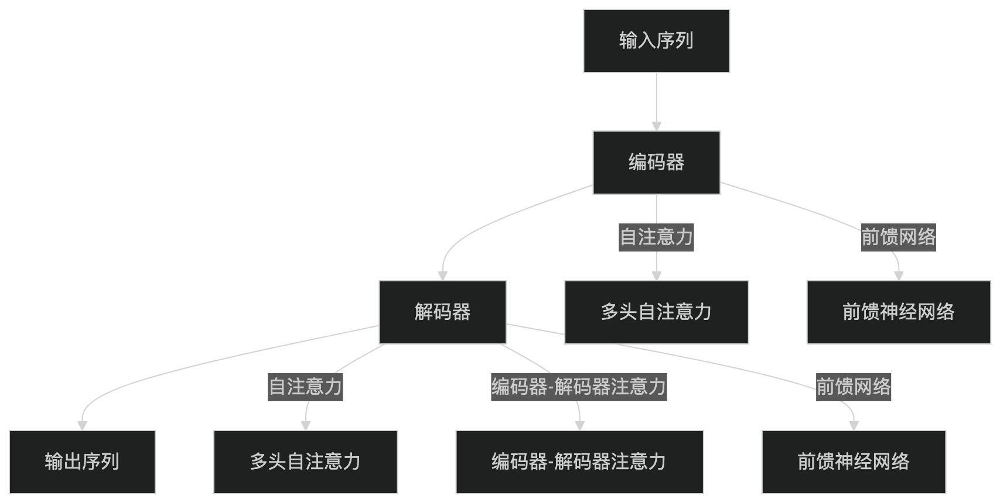

Transformer モデル
Transformer は、注意機構に基づく深層学習モデルであり、2017年に Vaswani らが論文「Attention is All You Need」で初めて提案しました。
これは自然言語処理（NLP）の分野を根本から変え、コンピュータビジョンなどほぼすべての AI 分野に急速に広がりました。
Transformer の核となる考え方は、従来の逐語処理方式（RNN）を完全に捨て、注意機構を用いてモデルが文全体を一度に見渡し、各単語と他の単語との関係を同時に判断することで、より高速なトレーニングとより強力な理解力を実現することです。
なぜ Transformer が必要なのか？
Transformer が登場する前、NLP 分野は主に RNN（リカレントニューラルネットワーク）系モデル（LSTM、GRU など）に依存しており、これらはテキストを順番に処理するため、2つの重大な欠点がありました。
RNN の限界
RNN は人間が「一語ずつ読む」ようにテキストを処理するため、以下の問題が生じます：
- 勾配消失：長いテキストを処理する際、モデルは初期の情報を「忘れて」しまいます。例えば、「私は昨日図書館で量子物理に関する本を借りた」という文では、「本」に到達した時にはすでに「私」が主語であることを忘れており、長距離依存関係を捉えるのが極めて困難です。
- 並列処理ができない：RNN は各単語を順番に処理する必要があるため、GPU の並列計算能力を活用できず、超長文のトレーニングは非常に遅くなります。
Transformer による解決策
自己注意機構により、モデルはすべての単語を同時に処理し、各単語ペア間の関連度を動的に計算することで、上記の2つの問題を完全に解決しました。
RNN vs Transformer 比較図RNN の順次処理 vs Transformer の並列＋全体注意の比較
Transformer 全体のアーキテクチャ
Transformer はエンコーダー（Encoder）とデコーダー（Decoder）の2つの主要部分から構成され、それぞれが同じモジュールを複数層積み重ねたものです。
類推して理解すると、エンコーダーは「読書人」のようなもので、入力された中国語の文を意味豊かなベクトルの集まりとして理解します。デコーダーは「翻訳者」のようなもので、これらのベクトルを参照しながら、単語ごとに英語の出力を生成します。
以下は Transformer のアーキテクチャ図です。左がエンコーダー、右がデコーダーです。

Transformer エンコーダー＋デコーダーの完全なアーキテクチャ（オレンジ色の矢印は Cross-Attention の情報の流れ）
Transformer モデルは エンコーダー（Encoder） と デコーダー（Decoder） の2つの部分で構成され、各部分は同じモジュールを複数層積み重ねたものです。

エンコーダー（Encoder）
エンコーダーは N 層の同じモジュールを積み重ねたもので、各層には2つのサブレイヤーが含まれます：
- マルチヘッド自己注意機構（Multi-Head Self-Attention）：入力シーケンス内の各単語と他の単語との関連性を計算します。
- フィードフォワードニューラルネットワーク（Feed-Forward Neural Network）：各単語に対して独立した非線形変換を行います。
各サブレイヤーの後には 残差接続（Residual Connection） と 層正規化（Layer Normalization） が続きます。
デコーダー（Decoder）
デコーダーも N 層の同じモジュールを積み重ねたもので、各層には3つのサブレイヤーが含まれます：
- マスク付きマルチヘッド自己注意機構（Masked Multi-Head Self-Attention）：出力シーケンス内の各単語とそれ以前の単語との関連性を計算します（マスクを使用して未来の情報の漏えいを防ぎます）。
- エンコーダー-デコーダー注意機構（Encoder-Decoder Attention）：出力シーケンスと入力シーケンスの関連性を計算します。
- フィードフォワードニューラルネットワーク（Feed-Forward Neural Network）：各単語に対して独立した非線形変換を行います。
同様に、各サブレイヤーの後には残差接続と層正規化が続きます。
Transformer モデルが登場する前、NLP 分野の主流モデルは RNN ベースのアーキテクチャであり、長短期記憶ネットワーク（LSTM）やゲート付き回帰型ユニット（GRU）などがありました。これらのモデルは入力データを順次処理することでシーケンス内の依存関係を捉えていましたが、以下の問題がありました：
勾配消失問題：長距離依存関係を捉えるのが難しい。
順次計算の限界：現代のハードウェアの並列計算能力を十分に活用できず、トレーニング効率が低い。

Transformer は自己注意機構を導入することでこれらの問題を解決し、モデルが入力シーケンス全体を同時に処理し、シーケンス内の各位置に異なる重みを動的に割り当てることを可能にしました。
核心：自己注意機構（Self-Attention）
自己注意機構は Transformer の最も重要な構成要素であり、「この単語を処理するとき、文中のどの他の単語に重点を置くべきか？」という問いに答えます。
Q、K、V とは？
各単語のベクトルは線形変換により、Query（クエリ）、Key（キー）、Value（バリュー）という3つの役割に変換されます。
Q K V 図解Q、K、V の由来と注意計算の流れ
検索エンジンの類推で Q/K/V を理解する：
Q（Query）= 検索ボックスに入力するキーワード、「何を調べたいか？」を表します。
K（Key）= 各Webページのタイトルタグ、「どのキーワードにマッチできるか？」を表します。
V（Value）= 各ウェブページの実際の内容を表し、「どんな情報を提供できるか？」を意味する。
注意重み = Q と各 K の類似度、最終結果 = 重みを使ってすべての V を加重合計する。
注意機構の数式
\[ \text{Attention}(Q, K, V) = \text{softmax}\left(\frac{QK^T}{\sqrt{d_k}}\right)V \]
ここで：
- \(Q\)クエリ行列、\(K\)キー行列、\(V\)バリュー行列、
- \(d_k\)はベクトルの次元で、ドット積をスケーリングして勾配爆発を防ぐために使う。
- softmax は生のスコアを 0〜1 の確率分布に変換する（重みの合計は 1）。
マルチヘッド注意（Multi-Head Attention）
単一のアテンションでは視点が限られ、ちょうど一つの角度だけで物事を見るようなものだ。
マルチヘッドアテンションは入力を h 個の部分空間に分割し、各「ヘッド」が独立に異なる注目パターンを学習し、最後に結果を連結する。

位置エンコーディング（Positional Encoding）
Transformer はすべての単語を同時に処理するため、本来「順序感覚」を持たない——「猫が魚を食べる」と「魚が猫を食べる」は同じものとして扱われる。
位置エンコーディングは、各単語に「座席番号」を付け加え、モデルに文中での各単語の位置を知らせるものだ。
Transformer には RNN のような明示的な系列情報（時間ステップ）がないため、入力シーケンス内の各単語に位置情報を追加するために位置エンコーディングが用いられる。通常は正弦関数と余弦関数を使って位置エンコーディングを生成する：例えるなら、試験で答案用紙に「第1問、第2問」と記すように、位置エンコーディングは Transformer に「我」が1番目の単語、「爱」が2番目の単語であることを認識させる。
\[ PE_{(pos, 2i)} = \sin\left(\frac{pos}{10000^{2i/d_{\text{model}}}}\right) \] \[ PE_{(pos, 2i+1)} = \cos\left(\frac{pos}{10000^{2i/d_{\text{model}}}}\right) \]
ここで：
\(pos\) は単語の位置、\(i\) は次元のインデックスである。
位置エンコーディングの可視化位置エンコーディングと単語埋め込みを加算し、モデルに位置情報を注入する。
エンコーダー-デコーダーアーキテクチャ
Transformer モデルはエンコーダーとデコーダーの2つの部分から構成される：
- エンコーダー：入力シーケンスを一連の隠れ表現に変換する。各エンコーダー層は、自己注意機構とフィードフォワードニューラルネットワークを含む。
- デコーダー：エンコーダーの出力に基づいてターゲットシーケンスを生成する。各デコーダー層は、2つの注意機構（自己注意とエンコーダー-デコーダー注意）と1つのフィードフォワードニューラルネットワークを含む。
残差接続と層正規化
各サブ層（自己注意、フィードフォワードネットワーク）の出力後、残差接続と層正規化の2つの操作が実行され、深層ネットワークの安定した学習を助ける。
残差接続の図残差接続は勾配を「ショートカット」させて流し、層正規化は学習を安定させる。
- 残差接続：サブ層の入力を出力に直接加算し（output = F(x) + x）、深層ネットワークの勾配消失を防ぐとともに、モデルが特定の層の変換を「選択的に無視」できるようにする。
- 層正規化：各層の活性化値を正規化し、学習をより安定させ、収束を速くする。
Transformer の利点
従来の RNN アーキテクチャと比較して、Transformer には以下の顕著な利点がある：
並列計算
シーケンス全体を同時に処理し、GPU の並列能力を最大限に活用するため、学習速度は RNN をはるかに上回る。
長距離依存
自己注意機構により、任意の2つの単語間の「通信距離」は常に 1 となり、もはやシーケンス長に制限されない。
スケーラビリティが高い
層をさらに積み重ね、次元を大きくするだけで性能を向上でき、BERT や GPT などの強力なモデルを生み出した。
Transformer の応用
Transformer アーキテクチャは AI の各分野で広く応用されている。以下に分野ごとに分類して紹介する。
自然言語処理（NLP）
コンピュータビジョン（CV）
マルチモーダルタスク
Transformer の応用
自然言語処理（NLP）：
機械翻訳（例：Google Translate）
テキスト生成（例：GPT シリーズモデル）
テキスト分類、質問応答システムなど。
コンピュータビジョン（CV）：
画像分類（例：Vision Transformer）
物体検出、画像生成など。
マルチモーダルタスク：
テキストと画像を組み合わせたタスク（例：CLIP、DALL-E）。
PyTorch 実装例
以下は、初心者が各ステップを理解できるように詳細なコメントを含む、完全な PyTorch Transformer の例である：
実例
import torch.nn as nn
import torch.optim as optim
# --- Transformer モデルを定義 ---
class TransformerModel(nn.Module):
def __init__(self, input_dim, model_dim, num_heads, num_layers, output_dim):
super(TransformerModel, self).__init__()
# 単語埋め込み：単語インデックスを model_dim 次元のベクトルにマッピング
self.embedding = nn.Embedding(input_dim, model_dim)
# 位置エンコーディング：学習可能な位置ベクトル、最大サポート長 1000
self.positional_encoding = nn.Parameter(
torch.zeros(1, 1000, model_dim)
)
# PyTorch 組み込みの Transformer（エンコーダー + デコーダーを含む）
self.transformer = nn.Transformer(
d_model=model_dim, # ベクトル次元
nhead=num_heads, # マルチヘッドアテンションのヘッド数
num_encoder_layers=num_layers, # エンコーダー層数
num_decoder_layers=num_layers # デコーダー層数
)
# 最終線形層：ベクトルを語彙サイズにマッピング（次の単語の予測用）
self.fc = nn.Linear(model_dim, output_dim)
def forward(self, src, tgt):
src_seq_length = src.size(1)
tgt_seq_length = tgt.size(1)
# 単語埋め込み + 位置エンコーディング（両者を加算）
src = self.embedding(src) + self.positional_encoding[:, :src_seq_length, :]
tgt = self.embedding(tgt) + self.positional_encoding[:, :tgt_seq_length, :]
# Transformer を通過（エンコーダーは src を読み、デコーダーは tgt を生成）
transformer_output = self.transformer(src, tgt)
# 線形層は各位置の語彙確率を出力
output = self.fc(transformer_output)
return output
# --- ハイパーパラメータ設定 ---
input_dim = 10000 # 語彙サイズ（異なる単語がいくつあるか）
model_dim = 512 # 各単語のベクトル次元（元の論文では 512）
num_heads = 8 # マルチヘッドアテンションのヘッド数（model_dim を割り切れる必要がある）
num_layers = 6 # エンコーダー/デコーダー層数（元の論文では 6）
output_dim = 10000 # 出力次元（語彙サイズと同じ）
# --- モデル、損失関数、オプティマイザの初期化 ---
model = TransformerModel(input_dim, model_dim, num_heads, num_layers, output_dim)
criterion = nn.CrossEntropyLoss() # 多クラス交差エントロピー損失
optimizer = optim.Adam(model.parameters(), lr=0.001) # Adam オプティマイザ
# --- サンプルデータを構築（実際の使用時は実データに置き換える） ---
# src: ソースシーケンス（例：中国語）、shape = (シーケンス長=10, バッチサイズ=32)
src = torch.randint(0, input_dim, (10, 32))
# tgt: ターゲットシーケンス（例：英語）、shape = (シーケンス長=20, バッチサイズ=32)
tgt = torch.randint(0, input_dim, (20, 32))
# --- 順伝播 ---
output = model(src, tgt)
# output.shape = (20, 32, 10000)：各位置の語彙に対する予測分布
# --- 損失の計算 ---
# view(-1, output_dim) で (20,32,10000) を (640, 10000) に平坦化
loss = criterion(output.view(-1, output_dim), tgt.view(-1))
# --- 逆伝播 + 重み更新 ---
optimizer.zero_grad() # 前ステップの勾配をクリア
loss.backward() # 勾配を計算
optimizer.step() # パラメータを更新
print(f"損失値: {loss.item():.4f}")
上記のコードはランダムデータを使ってプロセスのデモンストレーションをしているだけだ。実際の学習では以下が必要：
- 1) 実際のパラレルコーパスを準備する（例：中英翻訳ペア）；
- 2) トークナイゼーションと語彙構築をしっかり行う；
- 3) デコーダーの逐次推論（自己回帰生成）を実装する；
- 4) 学習率スケジューリング戦略を調整する（元の論文では Warmup を使用）。
まとめ
RNN から Transformer への進化は、深層学習分野における重要なパラダイムシフトを表している。
進化の経路図RNN から Transformer への進化の経路
Transformer の三大革新は深層学習の構図を根本から変えた：
- 自己アテンション機構——任意の2語を直接「対話」させ、勾配消失に別れを告げる。
- 完全並列化——訓練速度が質的飛躍を遂げ、大規模な事前学習を可能にした。
- 汎用アーキテクチャ——NLP から CV、マルチモーダルまで、Transformer は AI 時代の「汎用ブロック」となった。
Transformer を習得すれば、GPT、BERT、Stable Diffusion などの現代の AI モデルを理解する鍵を手に入れたことになる。
関連用語クイックリファレンス
| 用語 | 英語 | 説明 |
|---|---|---|
| 自己アテンション | Self-Attention | シーケンス内の各要素間の関連性を計算するメカニズム |
| マルチヘッドアテンション | Multi-Head Attention | 複数のアテンションヘッドを並列計算し、異なる特徴部分空間の情報を捉える |
| 位置エンコーディング | Positional Encoding | モデルにシーケンス内の要素の位置情報を提供する技術 |
| 残差接続 | Residual Connection | 入力をサブレイヤーの出力に直接加算し、勾配消失を緩和する |
| 層正規化 | Layer Normalization | 各層の活性化値を正規化し、学習の収束を加速する |
| エンコーダー | Encoder | 入力シーケンスをコンテキスト表現にエンコードする |
| デコーダー | Decoder | エンコーダーの出力に基づいてターゲットシーケンスを生成する |
| クロスアテンション | Cross-Attention | デコーダーがエンコーダーの出力に注目するアテンション機構 |
| マスクドアテンション | Masked Attention | デコーダーで未来の位置情報に注意を向けることを防ぐメカニズム |
| フィードフォワードネットワーク | Feed-Forward Network | 各位置に独立に適用される全結合層 |
クリックしてノートを共有
<p style="font-size:14px;">ノートは本記事の内容を拡張したものである必要があります！</p><br> <p style="font-size:12px;"><a href="../tougao.html" target="_blank">記事の投稿はこちらから</a></p> <p style="font-size:14px;"><a href="../w3cnote/runoob-user-test-intro.html" target="_blank">登録招待コードの取得方法</a></p> <h3 class="text-muted"><i class="fa fa-info-circle" aria-hidden="true"></i> ノートを共有する前に<a href=";.html" class="runoob-pop">ログイン</a>が必要です！</h3> <p><a href="../w3cnote/runoob-user-test-intro.html" target="_blank">登録招待コードの取得方法</a></p>